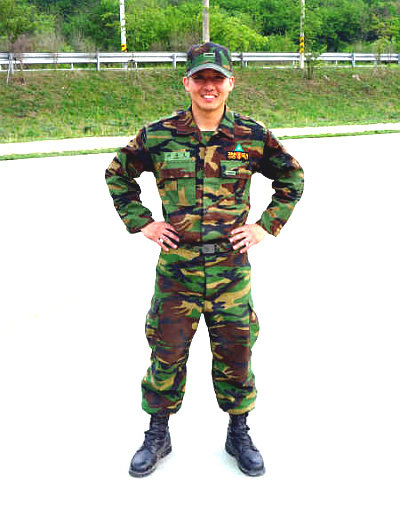
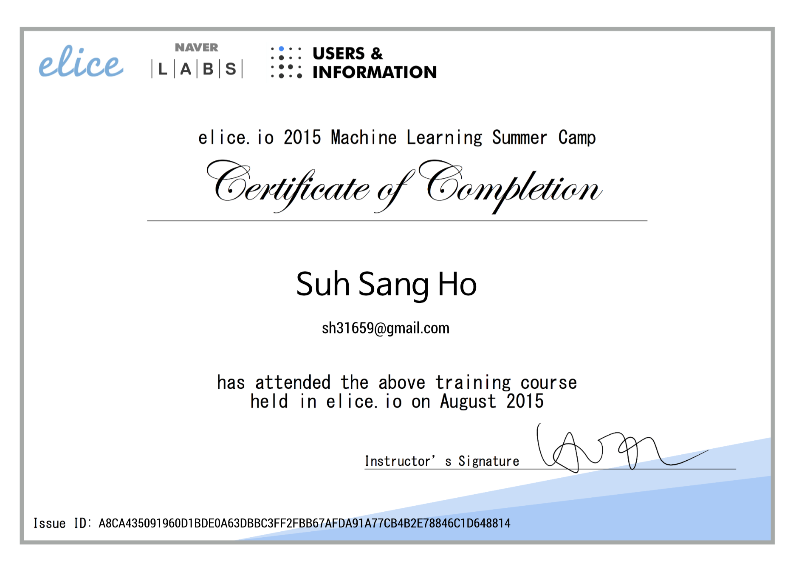
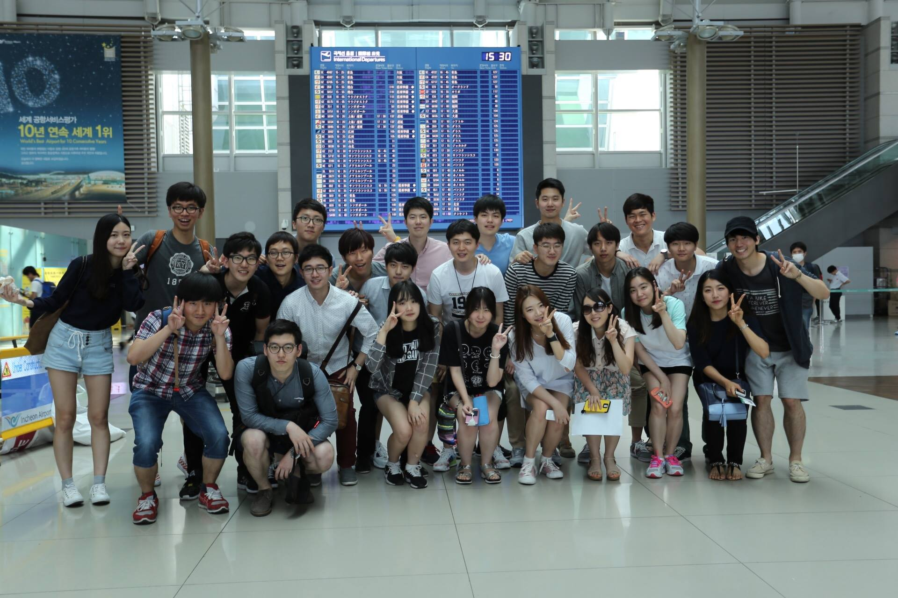
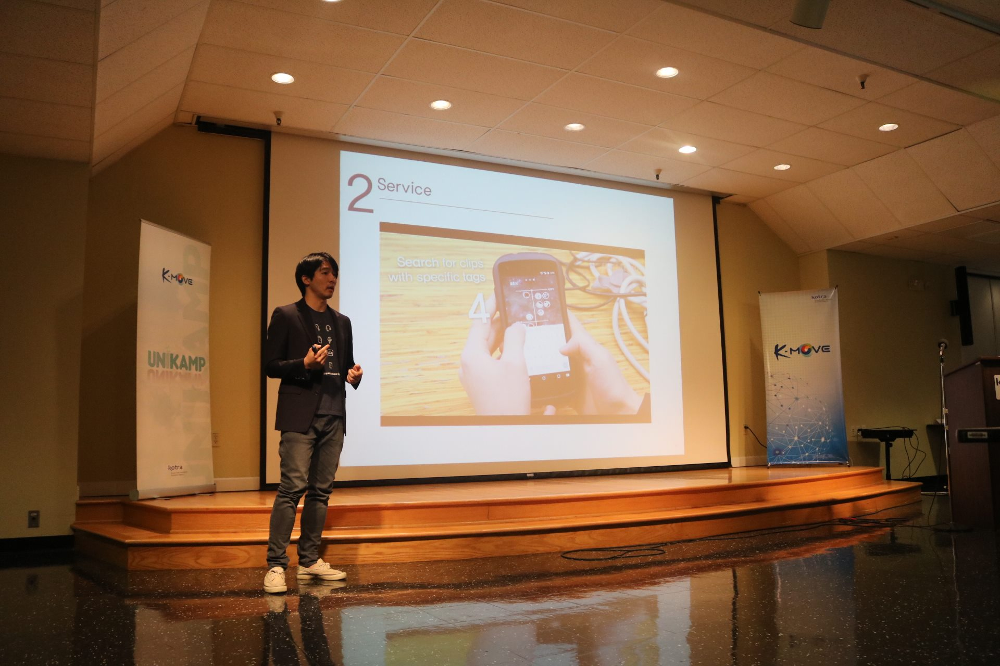
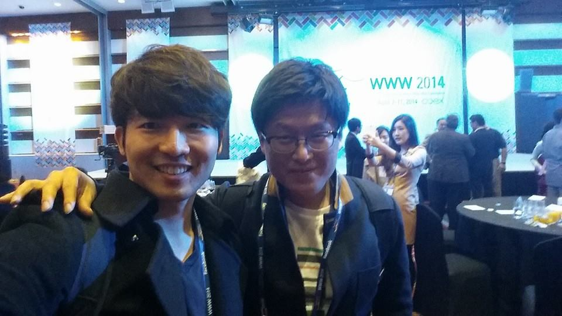
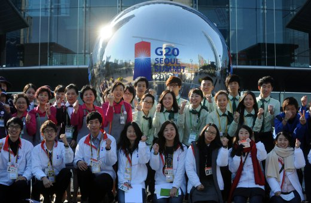
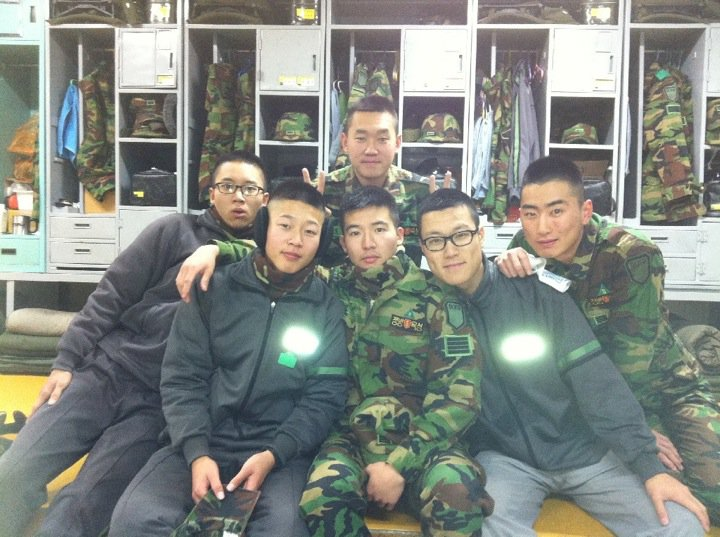

Sangho Suh
Curriculum Vitae
[PDF]
Education
@ Korea University | GPA: 4.0/4.5
Overview
| School | Location | Years |
|---|---|---|
| Dublin Christian Academy | NH, USA | 2000-04 |
| Cascadilla School | NY, USA | 2004-05 |
| Blair Academy | NJ, USA | 2005-08 |
| University of Chicago | IL, USA | 2008-08 |
| Korea University | Seoul, South Korea | 2013-17 |
Research Interest
- Adaptive/Interactive System
- Civic Engagement
- Collective Action
- Crowdsourcing
- Data Mining
- Data Visualization
- Human-Computer Interaction
- Learning at Scale
- Learning Experience
- Online Education
Publication
- Chung, Sunghyo, et al. "ReVACNN: Real-Time Visual Analytics for Interactively Steering Convolutional Neural Network." IJCAI, 2017, Melbourne, Australia. (In submission)
- Suh, Sangho, et al. "L-EnsNMF: Local Topic Discovery via Ensemble of Nonnegative Matrix Factorization." IJCAI, 2017, Melbourne, Australia. (Invited Publication | To appear)
- Suh, Sangho, et al. "Local Topic Discovery via Ensemble of Nonnegative Matrix Factorization." Knowledge and Information Systems (KAIS) Journal. (Invited Publication | To appear)
- Suh, Sangho, et al. “Interactive, Dynamic User Interface to Enhance Learning Experience.” L@S, 2017, Cambridge, USA. (In submission)
- Suh, Sangho, et al. "L-EnsNMF: Boosted Local Topic Discovery via Ensemble of Nonnegative Matrix Factorization." Proceedings of the IEEE International Conference on Data Mining (ICDM), 2016, Barcelona, Spain. Best Student Paper Award (out of 917 total submissions).
- Chung, Sunghyo, et al. "ReVACNN: Steering Real-Time Visual Analytics for Convolutional Neural Network." Neural Information Processing Systems Workshop on Future of Interactive Learning Machines (NIPS-FILM), 2016, Barcelona, Spain.
- Chung, Sunghyo, et al. "ReVACNN: Real-Time Visual Analytics for Convolutional Neural Network." ACM SIGKDD Workshop on Interactive Data Exploration and Analytics (KDD-IDEA), 2016, San Francisco, CA.
Research Experience
| Laboratory | Affiliation | Period |
|---|---|---|
| Data Mining & Information Systems Lab | Korea University | Jan.-Aug. 2014 |
| Data and Visual Analytics Lab | Korea University | Sep. 2015-Present |
Project
Ongoing
Dynamic user interface that adapts to the level and learning style of a user by changing the layout and its corresponding contents based on user interaction history
Previous
Navigation app for the visually impaired
Chrome plug-in for visualizing keywords
Simple memo-taking application that synchronizes in real-time
across the Web and Android app
Android app that leverages fun, interactive movie clips
to help English learners practice English speaking
Android app that allows users to capture and revisit important moments
of their lives with optimal mobile UX
Simple Scratch game using motion recognition
Directed the entire production from scripting, filming, presenting to editing
and attracted more than 110 subscribers
Dynamic algorithm study site which allows learners to choose explanations
in format (i.e., text, visual, video, etc.) of personal preference
Crawled public opinions from Twitter regarding candidates running for the Mayor of Seoul using R and presented in class insights gathered from the research
Skills
Python, Java, Android, MATLAB, R, C/C++,
HTML/CSS/PHP/JavaScript, jQuery, d3.js
Data Analysis, Data Visualization, Design Thinking,
Machine Learning, Project Management, UI/UX Design, Video Production
- Fluent in oral and written English & Korean
- Conversant in Chinese (4 years at high school)
- Beginner in Spanish & French
Java, C, Data Structure, Algorithm, Database, Machine Learning, Intelligent Data Analysis, Information Retrieval, Project Management, Machine Learning and its Applications, Artificial Intelligence, Internet Protocol, etc.
Honors & Awards

"L-EnsNMF" selected as the best student paper
among 917 total submissions @ ICDM'16

Won 1st place for "L-EnsNMF" (Research paper category)
and "ReVACNN" (Software category)
Chosen as the recipient of student travel grant
to attend ICDM'16 and present “L-EnsNMF”
Received $1,000 scholarship for research on “eduWiki”


Won an award for EYEscort @ HCI Korea 2016

Won an award at Project Management Competition


Received 3-year full scholarship plus stipend for each semester

Recognized for exemplary service to the Battalion

Recognized for exceptional training records
among approx. 500 recruits of '09-20 Army Basic Training camp
Selected Talks
| Date | Topic | Place |
|---|---|---|
| 12/21/2016 | L-EnsNMF | KIISE (South Korea) |
| 12/13/2016 | L-EnsNMF | ICDM'16 (Barcelona) |
| 12/09/2016 | ReVACNN | NIPS'16 (Barcelona) |
| 01/28/2016 | EYEscort | HCI Korea (South Korea) |
Slides can be found here
Slides can be found here
Work Experience
| Date | Position | Place |
|---|---|---|
| 01/2011-03/2012 | Instructor | Pagoda Academy (South Korea) |
| 06/2016-07/2016 | Data Visualization Engineer | Daumsoft (South Korea) |
Experience
August 2013

Implemented major machine learning concepts in Python and led the team as a group leader to win the “Best Group” award from more than 60 groups
June 22-30 2015

Supervised a group of students as a student leader with two professors in the trip to attend KOTRA UniKamp and visit companies such as Google, Apple and Intel
June 23-27 2015

Attended a startup program in Silicon Valley where I presented Pensieve, which was chosen as the top 2 finalists in the contest by Silicon Valley venture capitalists
February – September 2015
Orchestrated student activities and bridged the relationship between students and faculties as a vice president
April 7-11 2014

Assisted the organizers of the conference with various managing tasks as a student volunteer and attended technical sessions
October - November 2010

Guided G20 delegates and POOL reporters, a group of few reporters representing each G20 countries, for their exclusive coverage of national briefing by G20 leaders
January 2009 - November 2010

Served as a drill instructing assistant
& Member of the ROKS Cheonan Joint Investigation Group
September 2007 - June 2008
Served as a president of an international student club, which consisted of 58 international student members from 28 different nations
September 2007 - June 2008
Served as a role model for underclassman to follow and assisted dorm faculties to run dorm activities and study hall
Extracurricular Activities
March 2015 - January 2016

Supported the maintenance of the center for people with disabilities, e.g., providing assistance with showering, preparing/participating in social activities, and so on
March 2014 - June 2016

Tutored a child to help him with studies and receive admission from a top college
February 6-16 2013

Designed a curriculum and taught English to children in Burundi (Africa)
February 2011 - February 2012
Founded an organization that provides free tutoring to children in high school who cannot afford to register for classes at private educational institutes, the attendance of which is common for high school students in South Korea
References
- Jaegul Choo, Assistant Professor, Korea University
- Hyeonchol Kim, Professor, Korea University
- Jounghyun Kim, Professor, Korea University
Contact
E-mail: sh31659@gmail.com
Homepage: sanghosuh.github.io
GitHub: sanghosuh